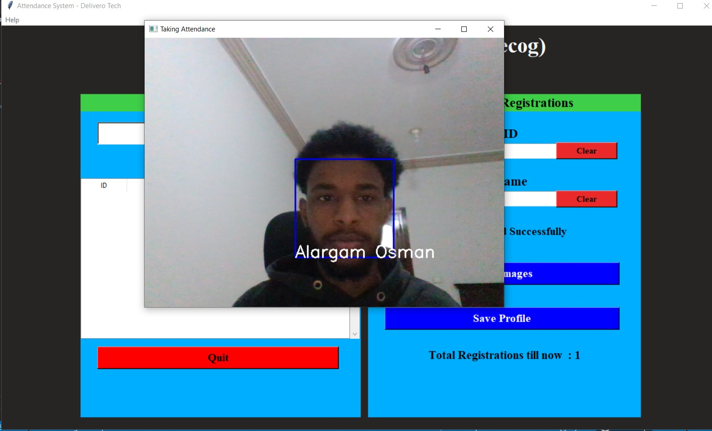
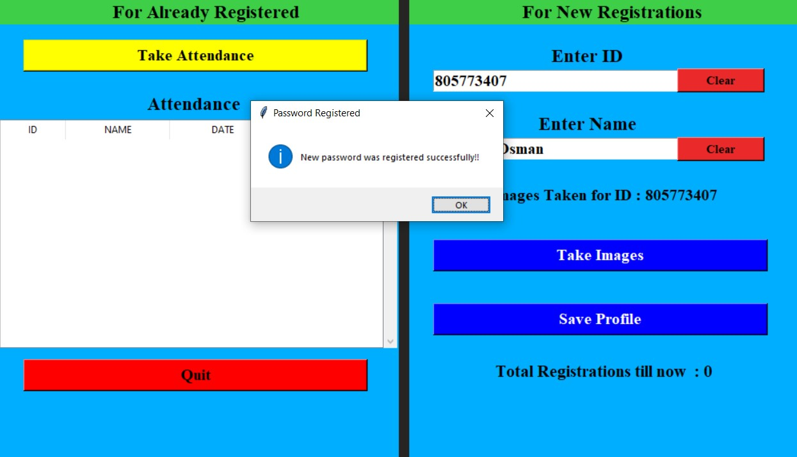
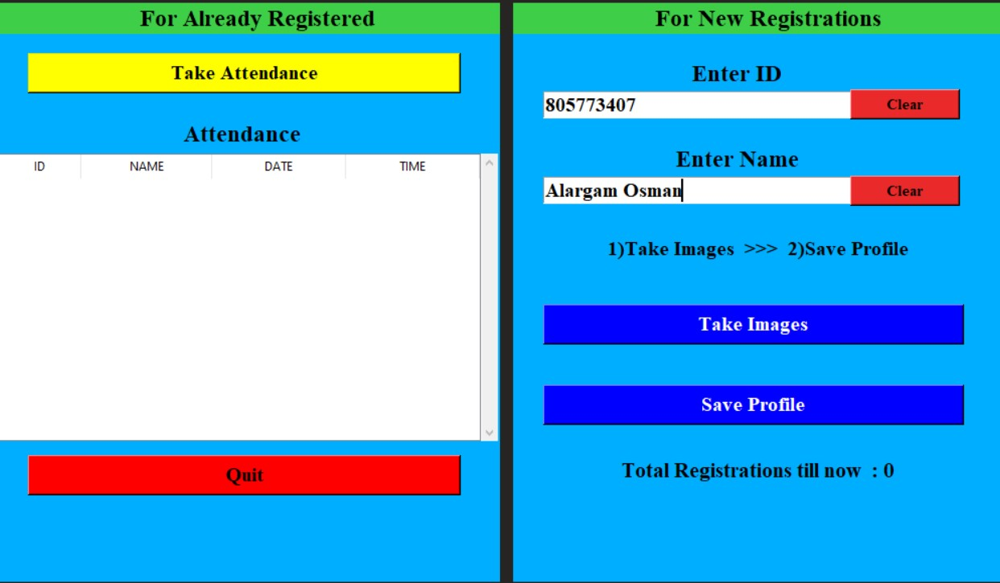

Face Recognition Attendance System
Real-Time Face Recognition | OpenCV | LBPH | Attendance Automation | GUI Workflow
A real-time face recognition attendance system that automates user registration, face enrollment, identity recognition, and attendance logging using OpenCV, LBPH face recognition, and a GUI-driven workflow for practical classroom or workplace monitoring.

Project Overview
This project is a complete face recognition attendance system designed to automate the process of user enrollment, identity verification, and attendance logging. The system uses a webcam to detect and recognize registered faces in real time, then records attendance automatically with timestamps.
The focus of the project was to build a practical desktop application, not only a computer vision script. It includes an admin setup step, user registration interface, face sample collection, model training, real-time recognition, attendance recording, and a GUI workflow that makes the system usable for daily operation.
The Problem
Manual attendance tracking is slow, repetitive, and prone to human error. Traditional systems such as paper sheets, manual Excel records, cards, or passwords can be lost, shared, delayed, or manipulated.
The challenge was to build an automated attendance system that can verify identity visually, reduce manual data entry, and record attendance in a structured way while remaining lightweight enough to run locally on a standard computer.
The Solution
I built a desktop-based face recognition attendance system using Python and OpenCV. The system detects faces using Haar Cascade, recognizes enrolled users using the LBPH Face Recognizer, and logs attendance automatically when a registered person is identified.
The workflow includes admin protection, user registration, face data collection, model training, real-time recognition, and attendance logging. This creates a complete local attendance automation pipeline suitable for classroom, lab, or workplace use cases.
Admin & Security Setup
The system includes an admin/security setup stage to protect access to the attendance management workflow. This helps prevent unauthorized users from changing registration data or operating the system without permission.

User Enrollment
The registration interface allows an operator to add user details before collecting face samples. This step links each user identity to a labeled dataset, which is later used to train the face recognition model.

Enrollment Completion
After user data and face samples are collected, the system confirms that registration is complete. The stored samples are then used during the training process so the recognizer can identify the user during live attendance sessions.
Real-Time Recognition & Attendance
During operation, the system captures live webcam frames, detects faces, compares them against the trained LBPH model, and identifies registered users. When a match is detected, the system displays the user status and records attendance automatically with the current timestamp.
Workflow / Technical Process
- Set up admin access for system protection
- Register users through the GUI
- Capture and store labeled face samples for each user
- Train the LBPH face recognizer on enrolled face data
- Detect faces in real time using Haar Cascade
- Match detected faces against the trained recognition model
- Display recognition results through the GUI
- Log attendance automatically with timestamp
- Store attendance records for later review
System Pipeline
End-to-end flow from protected setup through enrollment, recognition, and attendance record review.
Admin Setup
User Registration
Face Sample Capture
Model Training
Webcam Input
Face Detection
LBPH Recognition
Attendance Logging
Record Review
Tools & Technologies
Python OpenCV LBPH Face Recognizer Haar Cascade Webcam Video Stream GUI Framework CSV / SQLite Logging Local Desktop Deployment
Key Features
- Admin-protected attendance workflow
- GUI-based user registration
- Face sample capture and enrollment
- LBPH-based face recognition
- Haar Cascade face detection
- Real-time webcam recognition
- Automatic attendance logging with timestamps
- Lightweight local deployment
- Practical classroom or workplace attendance use case
Results / Impact
The system reduces manual attendance effort by automating identity verification and record creation. It provides a practical local solution for attendance tracking where registered users can be recognized through a webcam and logged automatically.
This project demonstrates how classical computer vision techniques can be combined with GUI design and data logging to build a usable intelligent automation system.
Skills Demonstrated
- Face recognition pipeline development
- Real-time computer vision with OpenCV
- LBPH model training and recognition
- Haar Cascade face detection
- GUI application workflow design
- User enrollment and data handling
- Attendance automation
- Local desktop application development
- Practical AI system integration
Engineering Highlights
- Built a complete attendance automation workflow
- Implemented GUI-based user registration and admin setup
- Integrated webcam-based real-time face detection
- Trained LBPH recognizer on enrolled face samples
- Automated attendance logging with timestamps
- Designed a lightweight local deployment workflow
- Combined computer vision, GUI, and data logging into one practical system